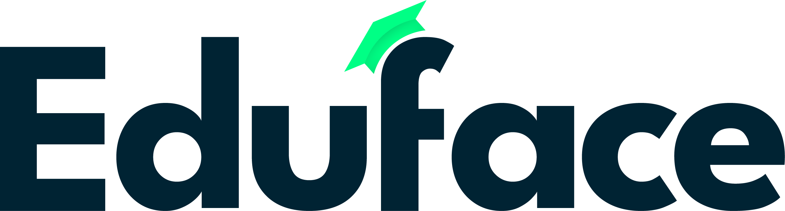

“Same rubric, same essay, uploaded twice. Two different grades.”
Job title, public university
“After a few essays it goes generic. Every student gets the same feedback.”
Head of academic innovation, private university
“You have to re-prompt it for every single assignment.”
AVP instructional design, US technical college

AI250,000
education-specific feedback examples
Developed with the help of Leiden University and Radboud University.